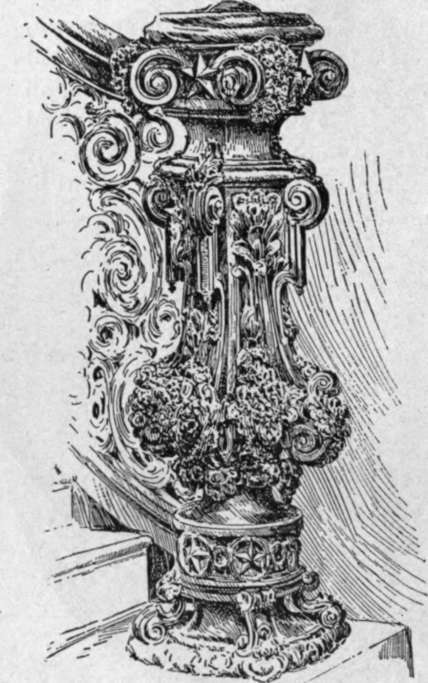

The House Wing. Speaker's Room And Lobby
Description
This section is from the book "The National Capitol. Its Architecture Art And History", by George C. Hazelton, Jr. Also available from Amazon: The National Capitol Its Architecture Art and History.
The House Wing. Speaker's Room And Lobby
The Speaker's room is at the head of the eastern private staircase of the House. There is nothing about its decoration in any way to distinguish it. The room is for the exclusive use of the Speaker of the House of Representatives, for the purposes of consultation and office work, when at the Capitol.
Speaker's Lobby
The Speaker's lobby, a long narrow corridor, is directly in the rear of the chamber of the House. Behind it is the Representatives' retiring room, furnished with comfortable chairs and sofas upholstered in leather, whose windows overlook the grounds and city toward the Potomac. This room and the lobby occupy the same relative position to the House that the President's room, marble room, Vice-President's room and private lobby occupy to the Senate. Their uses, however, are quite different. No person is permitted to enter them after the House convenes, unless he has the privilege of the floor. They are especially interesting, because they contain portraits of the various Speakers of the House of Representatives from the time of Frederick A. Muhlenberg of Pennsylvania, the Speaker of the First and Third Congresses, which hangs on the south wall adjacent to the Speaker's room. Opposite hangs a portrait of Robert C. Win thro p of Massachusetts, presented by citizens of that State after the delivery of his centennial oration, by appointment of Congress, at Yorktown, Virginia, on the 19th of October, 1881. The first portrait at the entrance to the lobby, near the Speaker's room, is that of John W. Jones of Virginia. Following it, upon the left, is James L. Orr of South Carolina. Within the first arch hangs Henry Clay of Kentucky, by Faynini. Then follow William Pennington of New Jersey, General Joseph B. Variium of Massachusetts, Robert M. T. Hunter of Virginia, Andrew Stevenson of Virginia, Theodore Sedgwick of Massachusetts and Schuyler Colfax of Indiana; while within the last arch, corresponding with the one where hangs the portrait of Henry Clay, is an admirable portrait by John S. Sargent (1891) of Thomas B. Reed of Maine, the present Speaker, who, as a parliamentarian, holds one of the most unique and conspicuous places in the public eye yet acquired by a Speaker of the House. In the retiring rooms, over the mantle, hangs the portrait of Jonathan Trumbull of Connecticut fame, the Speaker of the Second Congress. Directly opposite is that of Nathaniel P. Banks of Massachusetts; while beyond the door, outside the lobby, is John White of Kentucky. The first portrait upon the walls of the lobby next the chamber of the House, is that of Jonathan Dayton of New Jersey; opposite it hangs that of John W. Taylor of New York. To the right of Dayton is John Bell of Tennessee. Then follow Philip P. Barbour of Virginia, Linn Boyd of Kentucky, Michael C. Kerr of Indiana, Samuel J. Randall of Pennsylvania, James G. Blaine of Maine, Charles F. Crisp of Georgia, who was of a family of actors, and, as a boy, himself an actor, John G. Carlisle of Kentucky, Galusha A. Grow of Pennsylvania, J. Warren Keifer of Ohio, John W. Davis of Indiana, Howell Cobb of Georgia, James K. Polk of Tennessee and Langdon Cheves of South Carolina.
It is interesting to notice that, of this long line of illustrious men who have received the high honor of being Speaker of the House of Representatives, one pnly, James K. Polk, has been elected to the greater, but often not so powerful, office of President of the United States. Many of them have sought the nomination from their parties; several of them have been placed in nomination, but one only has reached the goal of his ambition, and he by far not the greatest.
Continue to: